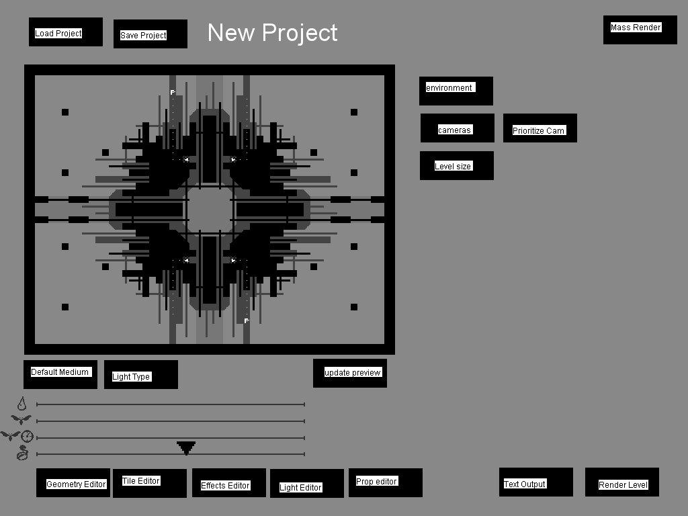

The Official Level Editor

The Rain World level editor is a powerful tool that allows for the creation of new rooms for the game. It is the same editor the developers used to make all of the rooms for the base game. It takes specially formatted spritesheets and a number of programmed effects and outputs png files that the engine interprets in 3D (as well as an accompanying text file which contains collision and gameplay info).
You can download the level editor from here.
Basic Features Overview
Once you've followed the on-screen instructions for either creating or opening a level, you are presented with the dashboard/preview screen. From here, you can switch between the different editors, load or save your level, and export it for use in-game. The preview presented here requires being manually updated whenever changes are made or when you first open a level. Pressing "1" at any point will bring you back to this screen so you can save your level or switch to a different editor.
It's often best to start by modifying the dimensions of the room to your liking using the level size button before beginning to edit. You can change this at any time, but because you set the dimensions manually rather than visually, making changes later is more difficult and poses the risk of accidentally deleting a portion of your room if you aren't careful.
From the dashboard you can switch to the Geometry Editor (for defining the level geometry and collision), the Tile Editor (for customizing the tiles and assets that make up the geometry created in the geometry editor), the Effects Editor (for adding procedural effects like erosion or slime, as well as things like plants or chains), the Light Editor (for customizing the light and shadow in your room), or the Prop Editor (for adding additional hand placed props and decals like graffiti).
Control Overview
View controls(numpad):
Notice, numlock must be turned on for these controls to have any effect.
- 8,2,4,6 - View movement
- 1 - Scrolls the view quickly when held, and a view direction is pressed.
- 3 - Even faster scroll than above.
- 9 - Allow the view to move outside the boundaries of the level.
Menu buttons(Number row):
- 1 - Main menu
- 2 - geometry editor
- 3 - tile editor
- 4 - camera editor
- 5 - Light editor
- 6 - Room size
Geometry Editor:
Full article here Geometry Editor.
- Arrow keys - Tool selection( if mouse is over main view. If mouse is over the tools, it will move the cursor instead.)
- Mouse movement - Primary cursor movement
- E,S,D,F - Secondary cursor movement
- Mouse left - Primary cursor, use current tool
- W - Secondary cursor, use current tool
- Q - Hold, and press the secondary cursor's movement keys to select the secondary cursor's current tool.
Tile Editor:
Full article here Tile Editor.
- A, D - Changes tile library's category
- W, S - Scrolls through tiles in current category
- Mouse left - Place currently selected tile if possible
- Mouse right - Remove tile under cursor
- F - Hold to place "material" category tiles in a 3x3 brush instead of 1x1
- V - Same as above, but gives a 5x5 brush
- Tab+X+C - Clears all tiles, Only loading the last save will undo this, use with caution!
- L - changes current tile layer ( 1 to 3 and then loops back to 1 )
- E - Sets the default material of unpainted tiles. Only works in the "material" category
- F - Forces a tile that requires certain geometry to be placed, without changing any geometry data.
- G - Forces a tile that requires certain geometry to be placed, and adds the required geometry.
- Q - Functions as an "Eyedropper" tool, selecting the tile you're hovering over to place.
Effect Editor:
Full article here Effects Editor.
Effect library:
- A, D - Changes effect library's category
- W, S - Scrolls through effect in current category
- E - Switches to editing previously applied effects.
- Space - Adds the selected effect.
Applied effects:
- W, S - Scrolls through effects applied in room
- N - Switches to adding new effects from the effect library.
- Space - edit selected effect
Effect editing:
- A, D - Scrolls through options in the effect's menu
- W, S - Changes the current effect's menu
- Space - activates selected option in effect menu
- Mouse left - Paints current effect
- Mouse right - removes current effect
- R - Grows cursor
- F - Shrinks cursor
- E or N - Switches back to the menus for editing or adding effects respectively.
Camera Editor:
Full article here Camera Editor.
- N - New camera, spawns held by mouse
- E - grab a camera if none is held
- D - Delete held camera
- P - Place held camera
Light editor:
Full article here Light Editor.
- W,A,S,D - Scale current light shape
- Q, E - Rotate current light shape
- Z - Toggle between drawing and erasing light
- Mouse left - Paint light
- Mouse right - Rotate light shape in direction of mouse ( does not paint it.)
- R, F - Scroll through light shape library
- J, L - Change angle of light source
- I, K - Change distance of light source
Prop Editor:
Full article here Prop Editor.
- A, D - Changes prop library's category
- W, S - Scrolls through props in current category
- Mouse left - Place current prop
- V - Hold and click mouse left to remove highlighted prop
- Q, E - Rotate prop left and right
- Space - Hold to speed up rotation
- Y,G,H,J - stretch prop
- T - reset prop stretching
- R - reset stretching, and rotation
- Y, H - Only on wires/tube props, Increases or decreases prop's physics node count. Less means more taught, more means more loose
- X - Pause wire/tube physics
- Tab+X+C - clear all props
- B - Click mouse left to set the highlighted prop as the currently selected prop
- L - Change layer
- Mouse right - Change prop depth. (There are 10 depths per layer, and each layer counts as 10. So props on layer 2, would start at 10, and count to 19, before going back to 10. Changes the order that props are drawn on top of each other with.)
- Mouse right + Space - Same as above, except going down in depth instead of up.
- U, I. O, P - Holds a prop by three vertices, and allows you to move the last one with the mouse to stretch it in a freeform manner. ( U stretches top right, I bottom right, O bottom left, and P top left. )
- K - resets freeform stretching.
- N - allows proper properties to be changed. Things like forcing certain graffiti to be drawn instead of a random one.
- M - Click with mouse left, to change the highlighted prop's properties (does the same as above, except allows you to edit an already placed prop. )
- Z - Changes prop color
- F + Left or right mouse - Changes between prop variants. This only applies to certain props.
Environment Editor:
- L - Change water level based on mouse movement
- F - Toggles between drawing water above the first layer or below it.
- W - Removes water from the level if there is already water. If there is no water, sets water level to halfway up the level.
Crash Avoidance and Editor Quirks
Due to the editor being extremely user unfriendly, you are likely to run into various crashes without warning. This is a list of various things to avoid doing.
Crashes:
Do not switch to editing applied effects in the Effects Editor when there are none. The switch will be invisible, and attempting to use the space bar to select something from there will crash the Level Editor.
Some effects have very specific conditions and cause issues when rendering, Effects include: Thick Roots, and Shadow Plants. these ones can be okayed through until it renders.)
Be sure to remove tiles from parts of a room that will be removed if you resize the room to cut those areas out, those tiles are still recorded, and will crash renders instantly.
props are the exact same as above
Never render with no cameras. It will crash.
Always move the prop menu into an actual category when you open it, it keeps the last menu used, and crashes if you select any entry that is not a real prop. (EX: it will have the effects menu, or tile menu.)
If you are using the Mirrored tile placer, in the geometry editor. Placing poles, with the other side of the mirrored brush being outside of the room, will crash the editor.
Quirks:
- The main menu is a mess when you return from using the Light Editor or the Environment Editor. Just change to any other editor (geometry or tiles, and back to main menu) to clean it. This is not a crash, but will help prevent confusion if you know to expect this.
- To use the Move and Move Mirror tools in the editor, you must first select them, and then move your mouse outside of the room itself, before it will respond to your inputs. Usually you will only need to put your mouse over the editor, but in larger rooms, this is often an issue, as the room is "behind" the menu, and thus only changes tool selection.
- The editor still receives inputs if you only tab out using alt-tab. When viewing another window, it's important to always minimize the editor, because there are many things that can go wrong if you're randomly clicking in the editor.
- (Requires more confirmation) The screen during rendering should usually show the map being rendered, but it may not. In the task manager, The Rain World Editor is under the tab Adobe Projector. Sometimes the reason it is not showing is a second application called "Print driver host for applications". Closing the application seems to fix the issue.
- The window for the application may be too big to fit on screen, and cannot be fixed since reaching the top bar or right clicking cannot be accessed to move the window.
Demo and Tutorial Videos
Region Developer Kaeporo created a tutorial for creating levels in and out of the level editor:
Mod community member Sacretis also put together a demonstration video, this time covering the creation of a room from scratch to visual polish (massively sped up for the sake of time):